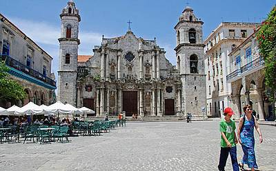
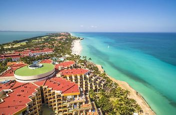
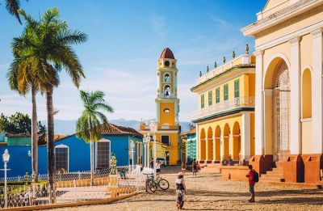
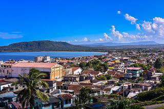

Старая Гавана

Старая Гавана – это район, включенный в перечень объектов Мирового наследия ЮНЕСКО, представляющий собой хорошо сохранившийся кусочек кубинской истории. Прогуливаясь по мощеным улицам и любуясь великолепными зданиями в стиле барокко или неоклассики, легко представить себе, как выглядела Куба 200 лет назад. Масштабные ремонтные работы последних лет вдохнули новую жизнь в исторические здания.
Варадеро

Данный город является одним из самых известных мест Кубы, ведь здесь находятся лучшие пляжи Карибского моря. Варадеро простирается вдоль полуострова Икакос, который связан с остальной частью страны разводным мостом. Более 50 отелей расположено на этой популярной территории под пальмами, а местные белоснежные пляжи привлекают посетителей со всего мира. Одна из здешних достопримечательностей -Природный парк Варадеро (Пунта Икакос). Это заповедник с красивыми пляжами и двумя пещерами: пещерой Амбросио и пещерой Мусульман. Также в Варадеро находится умиротворяющий парк Йосоне, который может похвастаться густыми цветниками, ресторанами, бассейнами и небольшим озером (где можно заняться греблей). В северо-восточной части города расположен Морской парк Кайо-Пьедрас. В водах парка имеется несколько затонувших кораблей и поразительное многообразие ярких рыб, что делает данное место популярным среди любителей подводного плавания. Помимо погружений, посетители Варадеро могут поучаствовать в глубоководной рыбалке, поиграть в гольф, прыгнуть с парашютом или отправиться к культурным достопримечательностям.
Тринидад

Путешествие в Тринидад (находится под охраной ЮНЕСКО) – это все равно, что путешествие во времени. Красивые отреставрированные здания и мощеные улочки городского центра хорошо сохраняют колониальную атмосферу. Большая часть архитектуры относится к XVII и XVIII векам, когда Тринидад преуспевал за счет торговли сахаром и рабами. Сегодня, это один из лучших городов Кубы для посещения (не считая Гаваны). Атмосфера города особенно сильно чувствуется на его центральной площади, которая так и называется – Главная площадь. Над ней возвышается церковь Святой Троицы, выстроенная в неоклассическом стиле.
Баракоа

Одной из достопримечательностей восточной Кубы является город Баракоа – старейший в стране. Он основан в 1511 году в провинции Гуантанамо. Одновременно с этим началось строительство церкви, которая также является первой на этих землях. Большую часть времени город был в стороне от внешнего мира из-за труднодоступного положения. Несмотря на то, что в 1960-х годах к городу было проложено удобное шоссе, он все равно сохранил некоторое ощущение изоляции. Современные туристы приезжают сюда ради очаровательной колониальной архитектуры и прекрасной загородной природы, где водопады и красивые пляжи хорошо дополняют густые джунгли. Плоская гора Эль-Юнке возвышается над всеми этими красотами, маня путешественников взобраться на свою вершину высотой 589 метров. Окружающая территория является биосферным заповедником ЮНЕСКО, в котором обитают редкие виды птиц и произрастают редкие растения. Чтобы лучше оценить живописные пейзажи, прокатитесь по шоссе Ла-Фарола. Оно имеет протяженность 49 км, и ведет от Баракоа к городу Кахобабо.